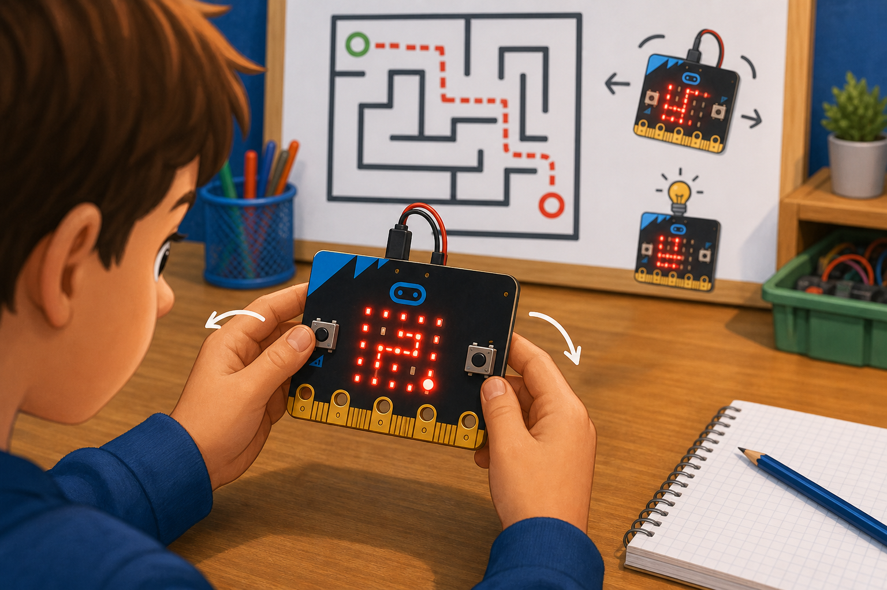

Shake dice
DetectA shake gesture
→
DecideThe micro:bit was shaken
→
DoShow a random number
The accelerometer senses movement, tilt, and how the micro:bit is being held.
It measures force on three axes — x (left to right), y (forward and back), and z (up and down).
It can also spot gestures like shake, tilt, and free fall.

from microbit import *
while True:
if accelerometer.was_gesture('shake'):
display.show(Image.SURPRISED)
x = accelerometer.get_x()input.onGesture(Gesture.Shake, function () {
basic.showIcon(IconNames.Surprised)
})
let x = input.acceleration(Dimension.X)get_x(), get_y() and get_z() for raw force, or was_gesture('shake') for movements.